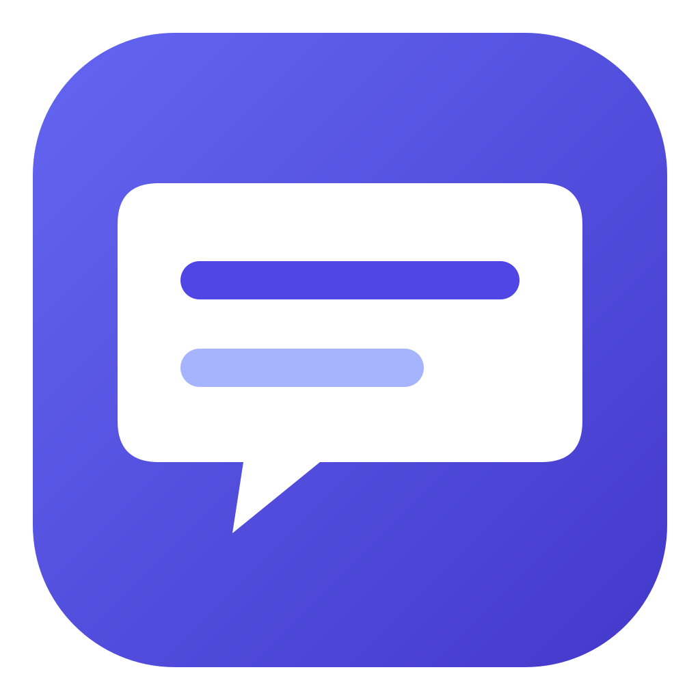
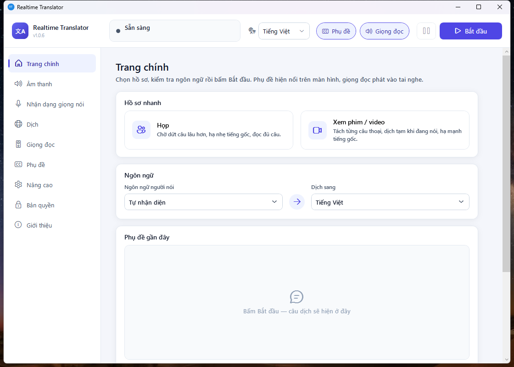

Realtime Translator
Dịch trực tiếp cuộc họp và video: phụ đề nổi trên màn hình, giọng đọc bản dịch vào tai nghe.
Live translation for meetings and videos — floating subtitles plus a translated voice in your headphones.
会議や動画をリアルタイム翻訳 — 画面に字幕、ヘッドホンに翻訳音声。

Nghe mọi app
Dịch âm thanh đang phát trên máy: phần mềm họp, trình duyệt, trình phát video. Có thể chọn nghe riêng một app.
Phụ đề + giọng đọc
Phụ đề nổi trên mọi cửa sổ, giọng đọc bản dịch vào tai nghe. Bật/tắt từng thứ bằng phím tắt.
Dịch theo từng câu thoại
Mỗi câu được dịch ngay khi người nói dứt câu, có bản dịch tạm hiện trong lúc còn đang nói.
Chạy trên máy hoặc cloud
Nhận dạng giọng nói (Whisper) và giọng đọc (Piper) chạy ngay trên máy, tăng tốc bằng GPU. Bộ dịch: Claude, API kiểu OpenAI, hoặc Ollama / LM Studio offline.
Tiếng Việt, Anh, Nhật
Giao diện 3 ngôn ngữ. Dịch qua lại giữa tiếng Việt, Anh, Nhật, Hàn, Trung và nhiều thứ tiếng khác.
Biên bản song ngữ
Lưu lại câu gốc và bản dịch của mỗi buổi trên máy. Bản Pro tóm tắt biên bản bằng AI.
Cần chuẩn bị gì?
- Bộ dịch: app không kèm sẵn bộ dịch trên cloud. Bạn dùng API key của chính mình (Anthropic Claude, OpenAI, Groq...) hoặc chạy Ollama / LM Studio miễn phí trên máy.
- Máy tính: Windows 10 (bản 2004 trở lên) hoặc Windows 11, 64-bit. Nên có card đồ họa (NVIDIA, AMD hoặc Intel) để nhận dạng giọng nói nhanh. Model tải về lần đầu khoảng 0,15–1,6 GB tuỳ lựa chọn.
- Tai nghe: để giọng đọc không lọt vào cuộc họp.
Free và Pro
Bản miễn phí có đầy đủ dịch, phụ đề và giọng đọc, mỗi phiên tối đa 15 phút (bấm Bắt đầu lại để chạy tiếp). Pro bỏ giới hạn thời gian và mở khoá tóm tắt biên bản bằng AI. Mua ngay trong ứng dụng qua Microsoft Store.
Hỗ trợ / Support
Email: tranxuandat.dev@gmail.com — gửi kèm phiên bản (mục Giới thiệu trong app) và mô tả lỗi.
Bấm Bắt đầu nhưng không thấy phụ đề?
Vào mục Âm thanh: chọn "Toàn bộ âm thanh máy", hoặc chọn đúng app đang phát rồi bấm nút làm mới. Ở mục Nâng cao, hạ "Độ nhạy nhận tiếng nói" xuống khoảng 0,5 nếu tiếng nói nhỏ hoặc lẫn nhạc nền.
Phụ đề hiện chậm?
Bấm hồ sơ Xem phim / video ở trang chính, bật "Dùng GPU" ở mục Nhận dạng giọng nói, và chọn model Claude Haiku ở mục Dịch (nhanh nhất).
Có cần báo cho người khác trong cuộc họp không?
Có. App xử lý lời nói của mọi người trong cuộc họp. Hãy tuân thủ quy định nơi bạn làm việc và pháp luật địa phương, và báo cho người tham gia khi cần. Nếu không muốn lời nói rời khỏi máy, chọn bộ dịch chạy trên máy (Ollama / LM Studio).
Đã mua Pro nhưng app vẫn báo bản miễn phí?
Đăng nhập Microsoft Store bằng đúng tài khoản đã mua rồi mở lại app. Vẫn lỗi thì gửi email cho chúng tôi.